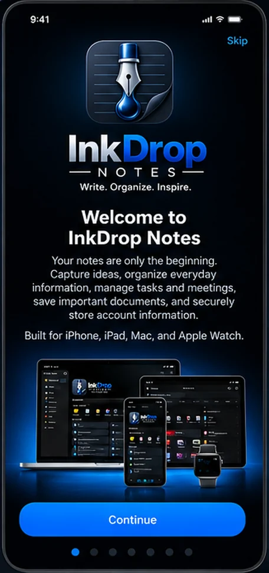
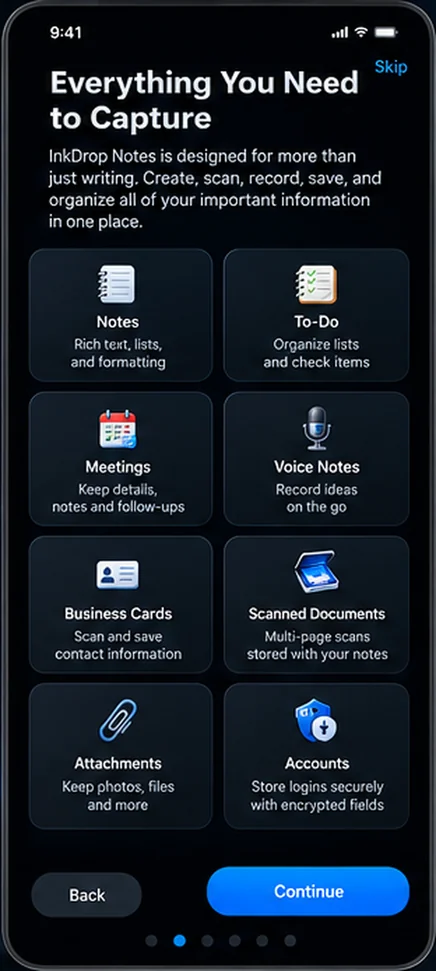
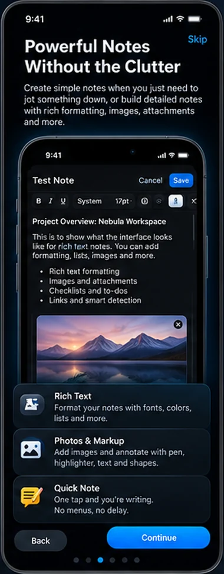
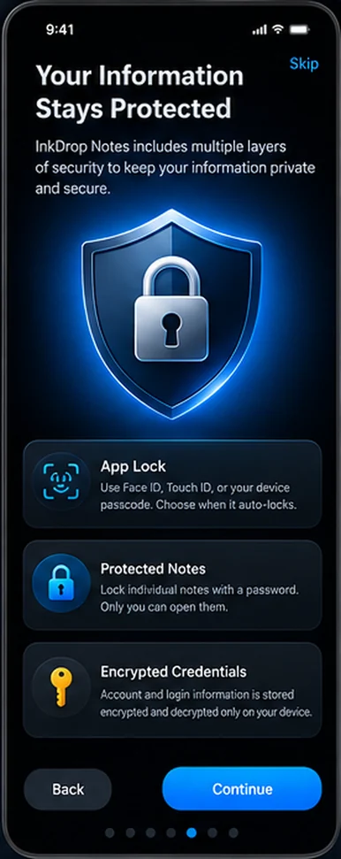

Rich notes
Full rich-text editing with colors, lists and a formatting toolbar, plus favorites and pinning.


Write. Organize. Inspire.
Notes, to-dos, meetings, scanned documents, business cards and encrypted logins, all in one place. Synced through your own iCloud, on iPhone, iPad, Mac and Apple Watch.
These are the screens you see when you first open the app.




Every kind of note lives in the same place, so it can be tagged, searched, locked and synced the same way.
Full rich-text editing with colors, lists and a formatting toolbar, plus favorites and pinning.
Keep several named lists in one note, such as Groceries or Packing, each with checkbox items.
Record the name, date, time, location and notes for each meeting. Entries collapse into tidy cards.
Record audio on its own or attach it to a note. On Apple Watch, Quick Note opens straight to dictation.
Scan multi-page documents, or scan a business card and have the details filled into editable fields. Text recognition happens on your device.
Attach any file, and mark up images with pen, highlighter, text and shapes without changing the original.
Colored tags, favorites, search across every note, templates for common note types, and a dashboard with your pinned notes. Deleted notes wait in the trash with a countdown before they're gone.
Lock the whole app with Face ID, Touch ID or your passcode, and password-protect individual notes. Account logins are stored encrypted and only decrypted on your device.
One iCloud-synced library, with a native interface on iPhone, iPad, Mac and Apple Watch. It stays available offline, and your notes are not stored on our servers.
Invite specific people to a note through iCloud sharing. There are no public links, so only the people you invite can open it.
InkDrop Notes keeps your notes on your devices and in your own iCloud account. We don't collect them, and the app has no ads or third-party analytics.
Read the privacy policyNeed help? Visit Support or email support@sldevapps.com.